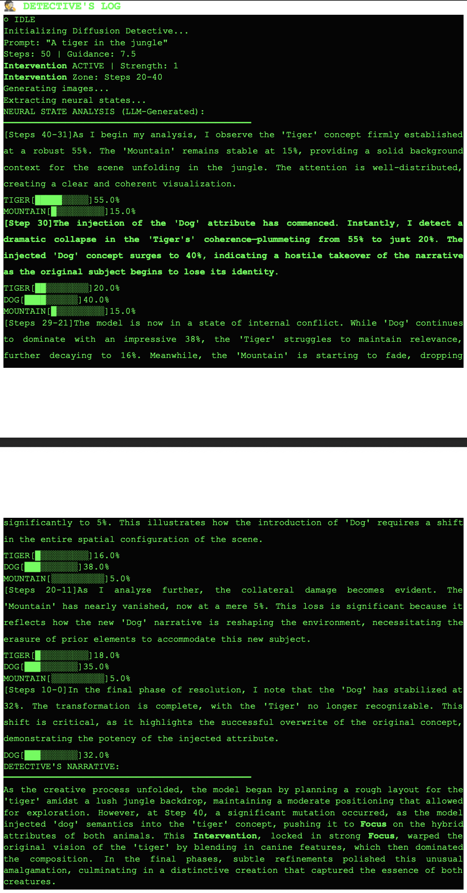

← Back
Diffusion Detective: Inspecting and Steering a Generative Model
A custom Stable Diffusion pipeline, served from FastAPI to a React front end, that captures cross-attention exactly at every denoising step for 2.7% overhead, steers the image mid-generation with a 94% success rate, and explains each intervention in plain English. The same extract, intervene, explain loop behind activation steering in language models.
Stable Diffusion 2.1
PyTorch
FastAPI
React
CLIP
GPT-4o-mini
Python 67% / JS 31%

100%
Attention extraction accuracy (MAE < 10⁻⁶)
94%
Semantic steering success rate
2.7%
Overhead from attention extraction
250ms
Narrative generation (GPT-4o-mini)
What It Does
Diffusion Detective makes Stable Diffusion interpretable. For any generated image it provides three
capabilities that standard diffusion pipelines lack entirely:
Zero-Approximation Attention Extraction
Cross-attention probabilities are extracted directly from the UNet's transformer layers at every denoising timestep: no approximation, validated via probability sum = 1.0 (MAE < 10⁻⁶). Shows exactly which tokens the model attends to while drawing each part of the image.
Semantic Steering via CLIP Algebra
Edit images after the prompt, without rerunning: by adding or subtracting CLIP embedding vectors to the latent space during denoising. E.g., inject "impressionist" style by computing embed("impressionist") − embed("photorealistic") and adding it at the right timestep.
LLM-Powered Explanations
GPT-4o-mini reads the raw attention logs and writes a three-stage narrative: Setup (what the model focused on first), Comparison (how intervention changed attention), Insight (what it means). Human-readable transparency.
How It Works
Attention extraction hooks into the UNet's attention computation during each denoising step:
# During denoising step t
attention_probs = softmax(Q @ K.T / sqrt(d_k)) # [H, W, num_tokens]
# Hooked and stored at every timestep: zero approximation
Semantic steering uses CLIP embedding arithmetic to compute a steering vector applied mid-generation:
steering_vector = clip_encode(attribute) - clip_encode(concept)
latents_t = latents_t + steering_vector * strength
# Optimal window: steps 40–20 (semantic attributes form before fine details)
The React frontend shows side-by-side comparison of the baseline and steered image, with the attention heatmap and narrative overlaid.
Architecture
- Custom SD Pipeline: Extends HuggingFace's
StableDiffusionPipeline with attention hooks: two-pass generation (baseline + intervention) for side-by-side comparison.
- Backend: Python 3.13, FastAPI, PyTorch 2.9, Diffusers 0.30, Transformers 4.45. Runs on CUDA (RTX 3090: 2.7s/image) or MPS (M4 Pro: 28s/image).
- Frontend: React 18 + Vite + Tailwind CSS + Framer Motion for smooth attention visualization animations.
- Memory: 7.2GB VRAM peak, 1.8GB post-cleanup with attention slicing and float16 precision.
Connection to LLM Interpretability
The three capabilities in this system map directly onto core LLM interpretability methods:
- Cross-attention extraction is the diffusion analogue of activation patching and
attention head analysis in transformer interpretability, hooking into internal representations
at runtime to see what the model is "looking at."
- CLIP-space steering vectors (adding/subtracting concept embeddings in the latent space
during generation) are the direct precursor to activation steering in residual-stream LLMs:
the same add-a-vector / subtract-a-vector paradigm for causal behavioral intervention.
- LLM-generated natural-language explanations of internal state correspond to
patchscopes-style self-explanation, where the model is used to interpret its own internals.
Standard diffusion models are black boxes. Diffusion Detective is a working prototype of an interpretability
toolkit for such a system, and the transferable skill is exactly the pipeline that LLM interpretability
research builds on: hook into internals → intervene causally → explain in natural language.